Projects
• 2022 – Present Protecting Data Confidentiality with Trusted Execution Environments (TEE): This on-going project aims to propose a TEE-based solution to protect data confidentiality on remote computing environment. This problem can be addressed by combining program analysis, TEE, and encryption algorithms. Designing novel program analysis and transformation algorithm, as well as TEE runtime system to support the program slicing and sensitive code executing will be challenging and interesting topic.
• 2017 - 2021 Protecting control flow confidentiality with Trusted Execution Environment: By leveraging trusted execution environment technology, such as Intel SGX, developed a system that automatically transforms condition logics of Java programs into matrixes and executes them in protected area, namely SGX Enclave. This solution protects program control flow confidentiality. The work was published in INFOCOM19 and IEEE Transactions on Computers in 2021, respectively.
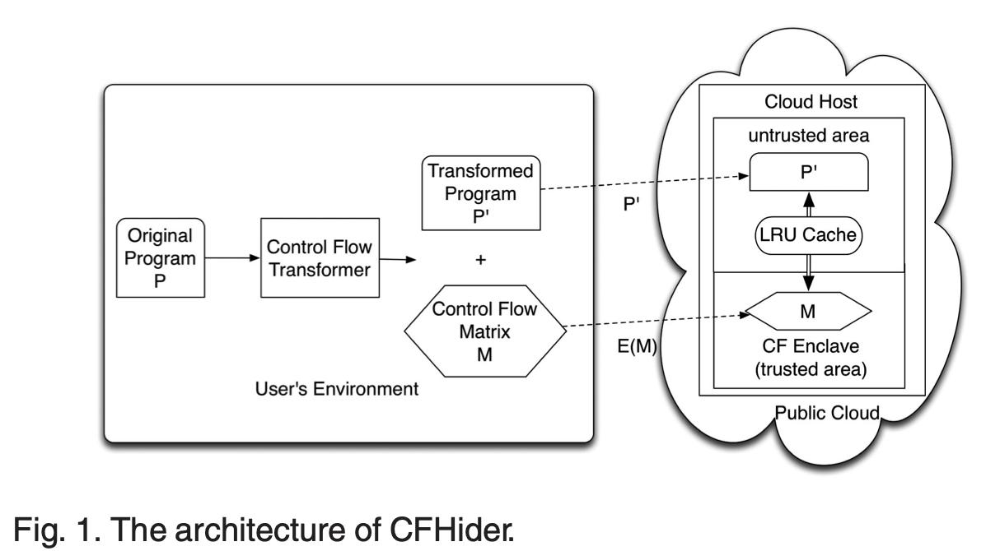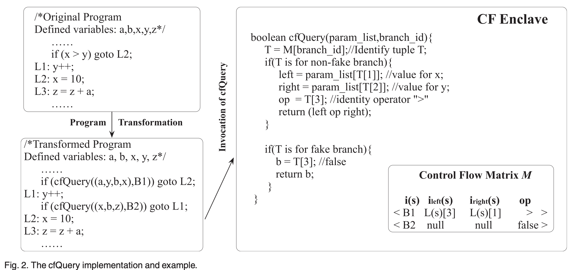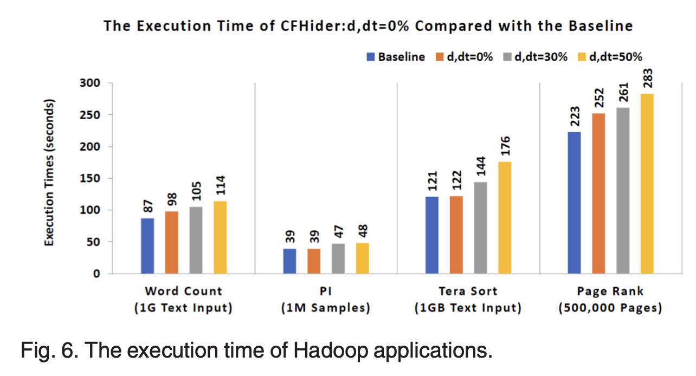
• 2017 – 2020 Protecting remote light-weighted database security using Trusted Execution Environment: By leveraging Intel SGX technology, a secure lightweight database, namely CryptSQLite, was developed based on SQLite. As the first TEE-based solutions to protect data confidentiality and integrity of lightweight databases, this work was published in NaNA2017 and received the best paper award. The extended version was published in IEEE Transactions on Computers and identified as a Trending Article in this journal.
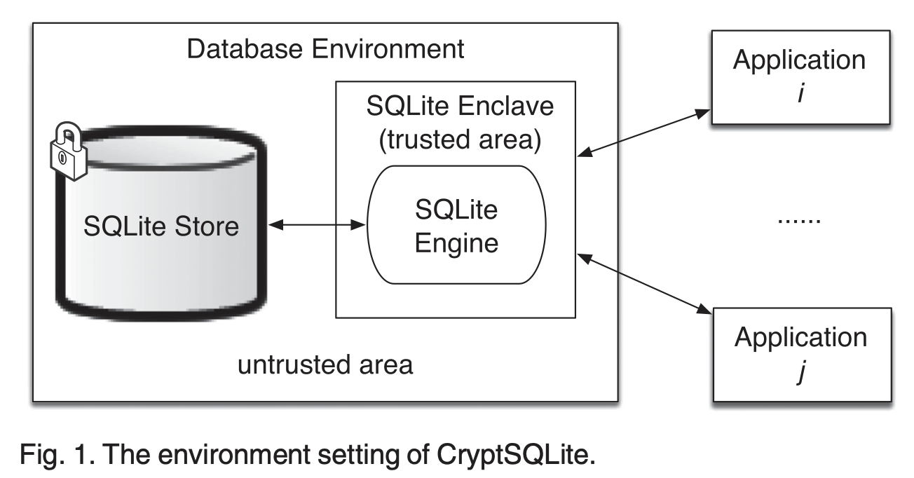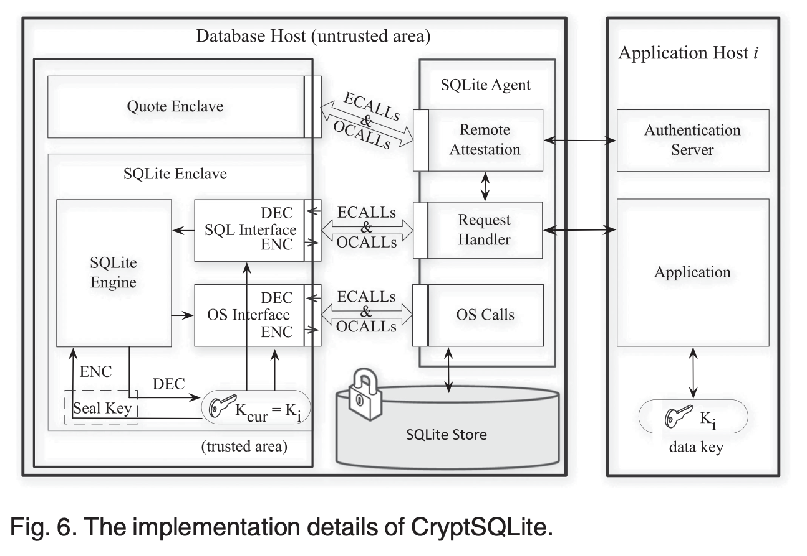 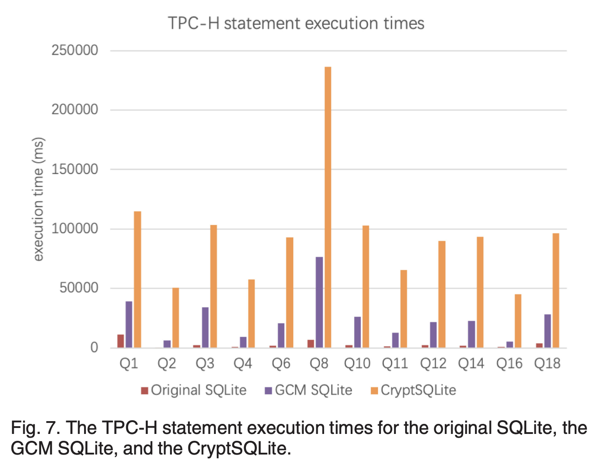
• 2015 – 2017 Remote Verification of Computation Integrity on Big Data Applications: To verify computation integrity for remote computing jobs, an audition-based verification method was proposed. The method instruments logging statements into the programs to generate execution logs during remote execution. Local simulations with randomization are performed, and mathematical constraints are derived and checked against the execution log. A prototype system was implemented, being able to automatically transform MapReduce programs. The work was published in IEEE Transactions on Information Forensics and Security.
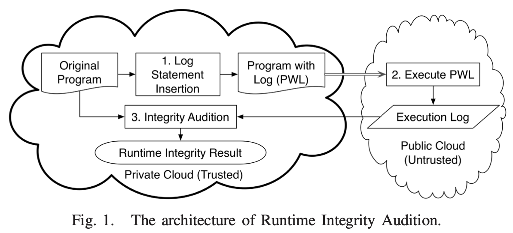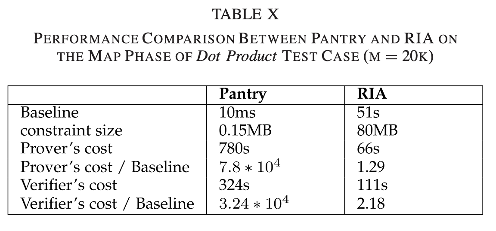
• 2015 – 2016 Covert Channel Communication in Content Delivery Network: A novel covert channel communication attack was discovered in existing Content Delivery Network (CDN) services. This channel utilized the CDN's architecture, encoding secret messages in the identity of edge servers passing normal requests. Malicious clients, such as bots, could abuse this channel to send secret messages to malicious servers, like bot masters. The covert channel was verified on AWS CloudFront, an AWS CDN service. The work was published as a full paper in the Elsevier Journal of Computer Communications.
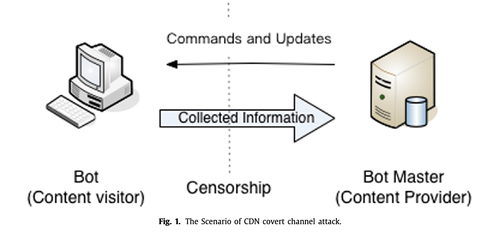 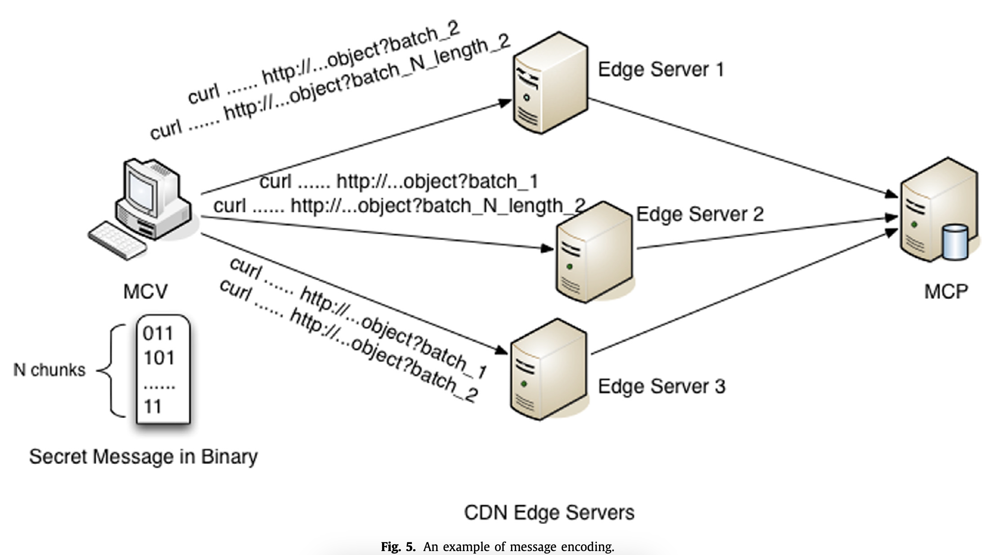
• 2013 – 2015 Control Flow Confidentiality Protection on Outsourced Computing Program: A hybrid cloud-based solution was proposed to protect the control flow confidentiality of remote program computation. The solution transforms the protected program into two parts, where control-flow-related code is executed on the trusted private cloud, while the rest runs on the untrusted public cloud. A prototype system was developed and tested on Amazon Elastic MapReduce, showing protected control flow and moderate performance overhead. The work was published in Elsevier Journal of Computers & Security.
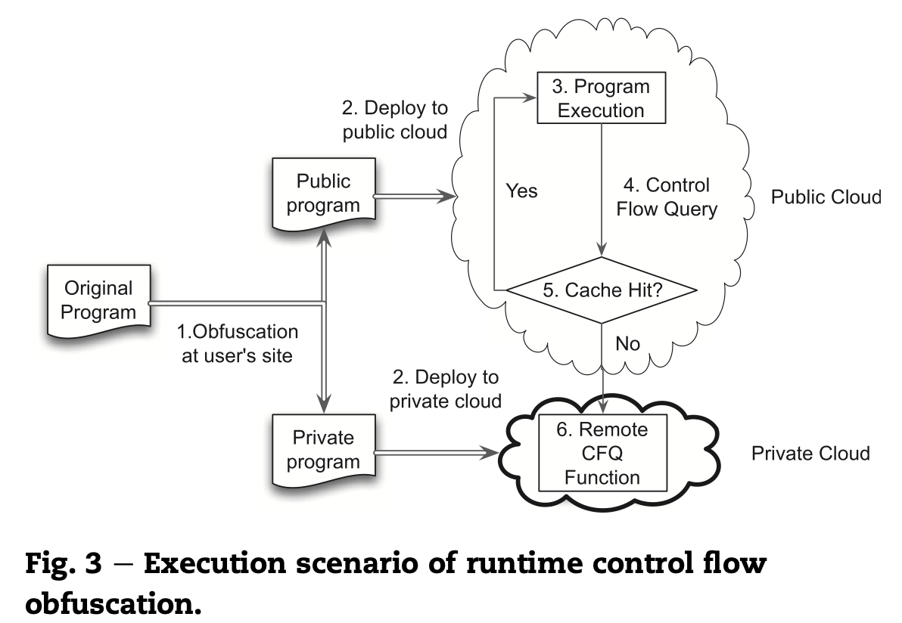 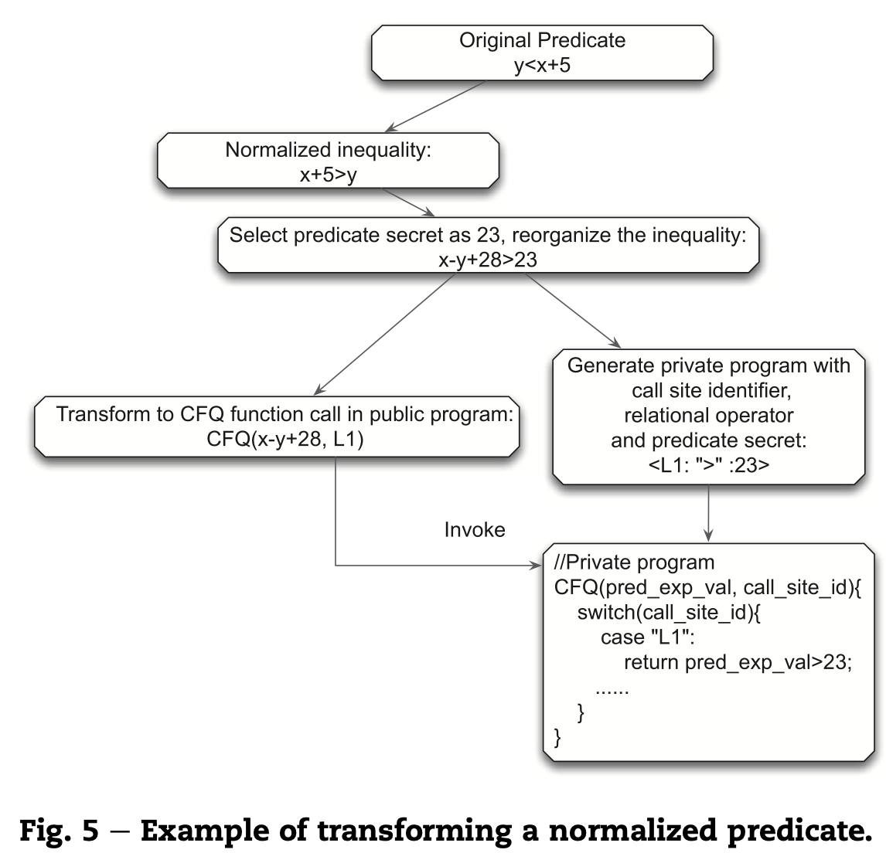
• 2010 – 2012 Result Integrity Assurance for MapReduce: To achieve high result integrity, a task-scheduling system for MapReduce was proposed and implemented. The system combined probabilistic task replication, probabilistic task verification, and credit management. A prototype MapReduce system was developed. The results demonstrated that the proposed solution guarantees high result integrity with moderate performance overhead. The work was published IEEE CLOUD 2011 and Elsevier Future Generation Computer Systems.